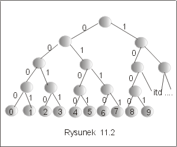

| « poprzedni punkt | nastêpny punkt » |
Jednym z problemów, z którymi spotykamy siê w informatyce, jest problem w³a¶ciwego wykorzystania pamiêci. Konstruuj±c algorytm staramy siê zwykle nie tylko o zminimalizowanie kosztów czasowych algorytmu, ale tak¿e o dobr± z³o¿ono¶æ pamiêciow± algorytmu. Ale co zrobiæ, je¶li to dane s± bardzo du¿e? Jak je przechowywaæ w pamiêci komputera? I tu przychodz± nam z pomoc± techniki kompresji danych, tzn. metody kodowania danych w takiej postaci, która pozwala zapisaæ ten sam zbiór informacji wykorzystuj±c du¿o mniej miejsca. Oczywi¶cie, zale¿y nam tylko na takich metodach, które pozwalaj± szybko zakodowaæ dane, oraz szybko i jednoznacznie odkodowaæ zakodowan± informacjê.
Przyk³ad 2.1
Przypu¶æmy, ¿e pewien zbiór danych zawiera 106 znaków. Je¶li ka¿dy z tych znaków jest reprezentowany przez liczbê z przedzia³u 0-255, to na zapisanie jednego znaku musimy zu¿yæ 8 bitów (256 = 28). Wynika st±d, ¿e na zapisanie ca³ego pliku zu¿yjemy 8 ´ 106 bitów. Gdyby¶my jednak mieli dodatkow± informacjê, np. ¿e w danych wystêpuj± jedynie cyfry od 0 do 9, to mogliby¶my na znak przeznaczyæ tylko 4 bity co pozwoli³oby zakodowaæ ca³y zbiór na 4 ´ 106 bitach. Przyporz±dkowanie znakom kodu mog³oby wygl±daæ np. tak:
0- 0000, 1- 0001, 2- 0010, 3- 0011 itd... 9-1001.
Dekodowanie zakodowanego pliku jest, przy takim kodzie, banalnie proste: odczytujemy kolejne cztery bity (s³owo kodowe) i w s³owniczku sprawdzamy jaki to znak. Na przyk³ad, ci±g bitów 0010001100100011 jest kodem liczby 2323. Poniewa¿ s³ownik sk³ada siê tylko z dziesiêciu elementów, wiêc w najgorszym razie odszukanie jednego znaku wymagaæ bêdzie porównania z dziesiêcioma s³owami kodowymi. Nie musimy jednak przeszukiwaæ s³ownika sekwencyjnie. Przedstawmy zbiór s³ów kodowych w postaci drzewa binarnego (drzewa kodowego), w którego li¶ciach przechowywane s± kodowane znaki, a ka¿de przej¶cie w lewo odpowiada bitowi 0, a przej¶cie w prawo- bitowi 1. W ten sposób ka¿da ¶cie¿ka od korzenia do li¶cia odpowiada s³owu koduj±cemu znak zapamiêtany w li¶ciu, por. rysunek 11.2.J
|
 |
Pytanie 2: Ile bitów trzeba przeznaczyæ na zakodowanie tekstu z³o¿onego z 107 znaków, je¶li u¿yto kodu o sta³ej d³ugo¶ci, a tekst sk³ada siê tylko z liczb naturalnych oddzielonych przecinkami lub spacjami, oraz z liter x, y, z?
Zauwa¿my, ¿e w przyk³adzie 2.1 niektóre li¶cie drzewa kodowego nigdy nie bêd± potrzebne, bo ci±g bitów prowadz±cy do nich, nigdy nie wyst±pi w zakodowanym tek¶cie. Na przyk³ad ci±g 1111 nie jest kodem ¿adnego ze znaków tego tekstu, wiêc nie wyst±pi w zakodowanym tek¶cie. Co wiêcej, gdyby cyfry 9 i 8 wystêpowa³y w tek¶cie tylko niewielk± liczbê razy, to i tak do ich zakodowania u¿yjemy a¿ 4 bitów. Czy to nie jest marnotrawstwo? A mo¿e zrezygnowaæ ze sta³ej d³ugo¶ci kodu i d³ugo¶æ kodu uzale¿niæ od czêsto¶ci wystêpowania tego znaku w kodowanym tek¶cie. Zasada jest prosta: znakom, które wystêpuj± czêsto przypisujemy krótkie kody. Wynika st±d, ¿e kody bêd± mia³ ró¿ne d³ugo¶ci.
Przyk³ad 2.2
Niech w danym pliku, cyfry 0 i 1 wystêpuj± 3 ´106 razy, a pozosta³e cyfry jedynie po 5´105 razy. Wtedy plik zawieraj±cy 107 znaków mo¿na zakodowaæ u¿ywaj±c tylko 8´106 bitów, stosuj±c kod 00 dla cyfry 0, 01 dla cyfry 1 oraz czterobitowe kody dla cyfr 2, 3, ..., 8, 9.
Liczba bitów potrzebna do zakodowania tekstu, dla którego znamy czêsto¶ci wystêpowania znaków , wynosi
SaÎA f(a) ´ dT(a),
gdzie f(a) jest czêsto¶ci± wystêpowania znaku a, a dT(a) jest d³ugo¶ci± kodu dla znaku a.
Problem, który siê teraz pojawia, to jak zbudowaæ kod uzale¿niaj±cy d³ugo¶æ kodu od czêsto¶ci wystêpowania znaków, w taki sposób, by mo¿na go by³o jednoznacznie odczytaæ (dekodowaæ). Warunek ten spe³niaj± kody prefiksowe.
Kody prefiksowe s± bardzo wygodne, gdy¿ dekodowanie jest niezwykle proste: odczytujemy pierwsze s³owo kodowe znajduj±ce siê na pocz±tku zakodowanego tekstu i usuwamy go. Poniewa¿ ¿adne s³owo kodowe nie jest prefiksem innego s³owa, wiêc to pierwsze s³owo jest jednoznacznie wyznaczone. Po jego usuniêciu postêpowanie mo¿emy powtórzyæ. Identyfikacjê s³owa znakomicie upraszcza reprezentacja kodu w postaci drzewa binarnego (drzewa kodowego), por. przyk³ad 2.1.
Uwaga Optymalny kod jest zawsze reprezentowany przez lokalnie pe³ne drzewo binarne, por. wyk³ad V, definicja 1.1. Zatem, je¶li dany jest alfabet A, to drzewo optymalnego kodu ma |A| li¶ci oraz dok³adnie |A|-1 wierzcho³ków wewnêtrznych.
Pytanie 3: Ile bitów wymaga kod sta³ej d³ugo¶ci, a ile kod zmiennej
d³ugo¶ci, dla zakodowania tekstu z³o¿onego z 1000 znaków, w którym wystêpuje 8 ró¿nych znaków, a ka¿dy z tak± sam± czêsto¶ci±?
| « poprzedni punkt | nastêpny punkt » |